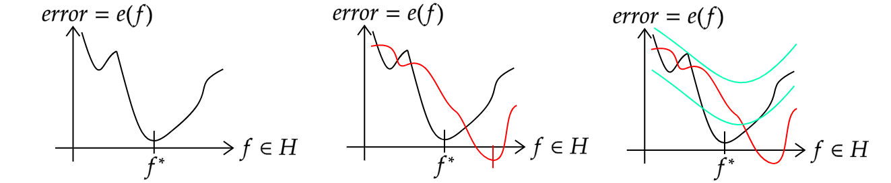

We consider the agent which want to choose an action \( a\in \mathbf{I} \), for example, the class label or selecting the best model. Each selection encode the information called loss we want to minimize over. And the risk, an expectation of loss over action selection \( R( a|x) =\mathbb{E}_{p( h|x)}[ L( h,a)]\), which specify how we want to choose the estimator or policy. For example, the binary classification, the loss is \( L=\mathbb{E} ( y\neq \hat{y})\) counting the number of misclassified labels, the risk is \( R(\hat{y} |x) =p(\hat{y} \neq y|x)\) where the action is the binary prediction labels.That is, the optimal policy, \( \pi =\mathbf{argmax}_{y} p( y|x)\). Let consider when the action is on the line rather discrete actions. The loss for this would be squared-error, \( L=\ ( h-a)^{2}\), and the risk is \( R( a|x) =\mathbb{E}\left[( h-a)^{2} |x\right]\). We obtain its minimum taking its derivative with respect to action (since it's continuous and diffirentiable) and set it to zeros to obtain \( \frac{\partial }{\partial a}\mathbb{E}\left[( h-a)^{2} |x\right) =-2\mathbb{E}[ h|x] +2a=0,\ \pi =\int h\ p( h|x) dh\). This is called minimum mean squared error estimate. Now, let consider when the action is the distribution rather than specific value. That is we assume the true distribution of action is \( a=q( Y|x)\) but we want to predict another distribution, \( h=p( Y|x)\) and we want it to be as close as possible to the true distribution. That is we want to minimize KL-divergence, \( KL[ p||q]\).
Occam's razor Suppose the models \( m_{1}\) and \( m_{2}\) are both suitible for explaining the dataset for which its likelihood, \( p( D|\theta _{1} ,m_{1})\) and \( p( D|\theta _{2} ,m_{2})\), both are large. The principle of Occam's razor tells us to choose the model that is less complex or fewer parameters. One would expect that since more complex introduce more computational requirement but having the same efficiency. The likelihood \begin{equation} p( D|m_{i}) =\int p( D|\theta _{i} ,m_{i}) p( \theta _{i} |m_{i}) d\theta _{i} \end{equation} where "\( i\)" index the \( i\)'th model, is marginal likelihood weighted by prior \( p( \theta _{i} |m_{i})\). So, higher weight assign higher probability to data and probably a good model. Since prior must integrated to one over entire parameters spaces, more parameters implied that the prior would assign less value to most probable spaces. But fewer parameters, that prior can concentrate on much smaller volume. If we compare predictive ability of these models, complex model which can predict many thing will assign less weight, spreading probability mass thinly but simple model will gather around. In practice, the marginal likelihood in (1) is intractible and sensitive very much to prior, another metrix to use for model selection is information criteria. It is based on likelihood test and penalty for complexity of the model.
- Akaike information criteria: \( \mathcal{L}_{AIC} =-2\log L( \theta ,m) +2n_{p}\) The first term penalize the number of parameters, so using a complex model will be less favor. But the second term, we drop the penalty by how well the model fitting. One can think of preventing overfitting of the model. AIC will tell us the balance between complexity and fitness of the model.
- Bayesian information criteria: \( \mathcal{L}_{BIC} =-2\log L( \theta ,m) +n_{p}\log N\) Imagine we train two models with similar parameters and having the same log-likelihood. What BIC will tell us is to choose the models which train on fewer sample sets, introduce by \( \log N\).
- Minimum desciption length \( \mathcal{L}_{MDL} =-\log L( \theta ,m) +C( m)\) In information theory point of view, we can think like sender and reciever of some information. The sender specify model \( m\) which has \( C=-\log p( m)\), the receiver reconstruct the data by model \( m\). In order for receiver to correctly reconstruct data, he need some information from receiver to tell how wrong he got, which is residual error and has \( -\log p( D|\theta ,m)\) bits. the total cost of sending information is \( -\log p( D|\theta ,m) +C\). The term \( C( m)\) can be think like complexity, the larger bits the larger complexity. And log term is how well receiver reconstruct data or how good that model is.
In frequentist perspective, the risk is defined as expectation of loss when apply estimator \( \pi \) to data \( x\): \( R( \theta ,\pi ) =\mathbb{E}_{p( x|\theta )}[\mathcal{L}( \pi ( x))]\) where data is sampled from likelihood \( p( x|\theta )\). This could be, for example, \( \pi _{1}( D) =\overline{x}\) (sample mean). In ML, we learn mapping \( f:X\rightarrow Y\) (hypothesis) where \( x\in X\) is input and \( y\in Y\) is response from given input. Note that \( y\) is not deterministic function of \( x\) but a random variables. To model the uncertainty of data, assuming the joint \( p( x,y)\) of training sets, each pairs \( ( x_{n} ,y_{n})\) drawn from \( p( x,y)\). The risk is \( R( f,p( x,y)) =\mathbb{E}_{p( x) p( y|x)}[\mathcal{L}( y,\ f)]\) where expectation is taken over true joint. Notice, that the true joint is unknown, assume that we don't know how data is generated. We come to approximation using empirical distribution of \( N\) samples: \( f_{ERM} =\mathbf{argmin}_{f\in H}\frac{1}{N}\sum _{n=1}^{N}\mathcal{L}( y_{n} ,f( x_{n}))\) where \( \mathbf{argmin}\) is taken for best function of \( f\in H\) that minimize this approximation. One such approximation is cross-validation where the empirical risk on validation is an estimate of the population risk. Statistical learning theory studied how this population risk can be compute as analytical approximation which is a bounding risk on true risk. I describe more below.
Let \( f^{**} =\mathbf{argmin}_{f} R( f)\), the function having minimal population risk, we optimize over function. And \( f^{*} =\mathbf{argmin}_{f\in H} R( f)\), the function having minimal risk in set of hypothesis tests \( H\). Follow from ERM above, we cannot directly compute \( f^{*}\) but approximate it using training sets of \( N\) samples. What statistical learning care about is how empirical average, from finite samples different from real error: apprx error gen error \begin{gather} GP=\mathbb{E}_{p}\left[ R\left( f_{N}^{*}\right) -R\left( f^{**}\right)\right] =\frac{1}{N}\sum _{n=1}^{N} e\left( f_{N}^{*} ,\ f^{**}\right) -\mathbb{E}_{p}\left[ e\left( f_{N}^{*} ,\ f^{**}\right)\right]\\ \approx \mathbb{E}_{p_{train}}\left[\mathcal{L}\left( y,\ f_{N}^{*}\right)\right] -\mathbb{E}_{p_{test}}\left[\mathcal{L}\left( y,\ f_{N}^{*}\right)\right] \end{gather} The first term of (2) measure how well the model \( f^{*}\) approximate compare to the best model \( f^{**}\). Clearly it is finite set of \( N\) samples. The second term, is generalization error which introduce as a result of finite training set. Using more expressive familty of function \( f^{*}\), will have less approximation error but increase generalization error. As \( N\rightarrow \infty \), the gap also approach zeros. The field of statistical learning concern with how to compute the population risk, \( R( f) =\mathbb{E}_{p( x,y)}[\mathcal{L}]\). Where come across the upper bound of true error, denote \( e( \cdotp )\). Now the picture:  The error is a function hypothesis \( f\) and we can find optimal if \( f^{*}\)by minimizing it. But the problem is that this function is do not known, since we don't have access to full generated distribution of data. So we approximate it. The red line is the empirical error, notice that the error go below an actual value (black line). The result is we approximate the wrong model that deviate from the optimal model even the error \( e( f)\) is less than the actual one. The solution would be bounding uniformly for not having approximation go too far (green line). I include formal description from Murphy page 190 since it's an important result, proof can be found there too.
Theorem 1 Theorem For any data distribution \( p^{*}\), and any dataset \( D\) of size \( N\) drawn from \( p^{*}\), the probability that the generalization error of a binary classifier will be more than \( \epsilon \), in the worst case, is upper bounded a\begin{equation*} Pr(\mathbf{max}_{h\in H} |R( h) -R( h,D) | >\epsilon ) \leqslant 2\mathbf{dim}( H) e^{-2N\epsilon ^{2}} \end{equation*} where \( R( h,D) =\frac{1}{N}\sum _{n=1}^{N} \mathbb{I} ( f( x_{n} \neq y_{n})\) is the empirical risk, and \( R( h) =\mathbb{E}[ \mathbb{I} ( f( x) \neq y)]\) is population risk. TODO: 1 2 3 4
Entropy: \( \mathbb{H}( X) =-\mathbb{E}_{X}[\log p( X)] =-\sum _{k=1}^{K} p( X=k)\log_{2} p( X=k)\) This measure the uncertainty of random variables, having maximum at 1 which occur when the variables is uniformly distributed, \( p( X=k) =1/K\). Which is very high uncertainty. And has its minimum of 0 when there is a spike in distribution (all value centered on some value), which is no uncertainty at all. In field of information theory, this concerning compressing the data without lossing information, more bits require memory/symbols. The result is that the minimum bits needed to compress a data generated by \( p\) is at least \( \mathbb{H}( p)\) is the lower bound of compressing data without loss of information. Cross-entropy: \( \mathbb{H}( p,q) \equiv -\sum _{k=1}^{K} p_{k}\log q_{k}\) and Joint-entropy: \( \mathbb{H}( X) =-\sum _{x,y} p( x,y)\log p( x,y)\). \( \mathbb{H}( X,Y) =\mathbb{H}( X) +\mathbb{H}( Y)\) if \( X\) and \( Y\) is independent. And since entropy is measure of uncertainty, if we have deterministic function \( f\), and let \( Y=f( X)\). Then the uncertainty should not change, \( \mathbb{H}( X,Y) =H( X)\). Consider the joint entropy \( \mathbb{H}( X,Y)\), should this increase some predictability in the system when adding some variable \( Y\). Not at all, it is in fact from its lower bound \( \mathbb{H}( X,Y) \geqslant max\{\mathbb{H}( X) ,\mathbb{H}( Y)\} \geqslant 0\). The upper bound is \( \mathbb{H}( X,Y) \leqslant \mathbb{H}( X) +\mathbb{H}( Y)\). In order to increase predictability (reduce entropy), we need the data, this is the conditional entropy to deal with. After observing \( X\), what is uncertainty of variables \( Y\)? Conditional Entropy: \begin{gather} \mathbb{H}( Y|X) =-\mathbb{E}_{p( X)}[\mathbb{H}( p( Y|X))]\\ =-\sum _{x} p( x)\mathbb{H}( p( Y|X=x)) =-\sum _{x} p( x)\sum _{y} p( y|x)\log p( y|x)\\ =-\sum _{x,y} p( x,y)\log\frac{p( x,y)}{p( x)} =-\sum _{x,y} p( x,y)\log p( x,y) -\sum _{x} p( x)\log\frac{1}{p( x)}\\ \mathbb{H}( Y|X) =\mathbb{H}( X,Y) -\mathbb{H}( X) \end{gather} Now consider again when \( Y=f( X)\) is a deterministic function of \( X\). The entropy or uncertainty should not increase at all since we already observed \( X\) and \( Y\) is not random, \( \mathbb{H}( Y|X) =0\). The entropy \( \mathbb{H}( Y|X)\) is zero only when \( Y\) is independent of \( X\), knowing \( X\) tell nothing about uncertainty of \( Y\). From its upper bound, we have \( \mathbb{H}( Y|X) \leqslant H( Y)\), this tell us that observing the uncertainty of observing \( Y\) alone should be more than its conditioning on some variable \( X\). Note that, however \( \mathbb{H}( Y|x) >\mathbb{H}( Y)\) is when the observed a "particular" \( x\) confused the information. The generalization, the chain rule is \( H( X_{1} ...X_{N}) =\sum _{i=1}^{n}\mathbb{H}( X_{i} |X_{i} ...X_{i-1})\). The entropy of continuous random variables, differential entropy can be negative. Computing is approximated by discretizing in to sum \( N\) bins. TODO: WHY use logarithm in entropy? Goin backward, what is information?
Divergence property can be found on this. The connection to MLE (maximum likelihood estimate) is as follow, minimizing KL to the empirical distribution is equivalent to maximizing MLE. Now suppose the goal is to minimize KL-divergence, \( \mathbf{min}_{q} KL( p||q)\), since \( \mathbb{H}( p)\) is constant, this is similar to minimize cross-entropy alone: \( \mathbf{min}_{q} KL( p||q) =\mathbf{min}_{q}\mathbb{H}( p,q)\). TODO: d1 d2
While KL-divergence measure the probabilistic distance, mutual information is the measure of the dependency between random variables and is defined as \( \mathbb{I} ( X;Y) =KL( p( x,y) ||p( x) p( y))\). This is the distance between the joint of \( X\) and \( Y\) (some dependency) and factored joint of itself (if assume it is independent). The minimum is when there's no independency at all, \( p( x,y) =p( x) p( y)\) so \( KL=0\). It can be written as \( \mathbb{I} ( X;Y) =\mathbb{H}( X) -\mathbb{H}( X|Y) =\mathbb{H}( Y) -\mathbb{H}( Y|X) =\mathbb{H}( X) +\mathbb{H}( Y) -\mathbb{H}( X,Y)\). We can normalize \( \mathbb{I} ( X;Y)\) ranging to [0,1], since \( \mathbb{H}( X) -\mathbb{H}( X|Y) \leqslant \mathbb{H}( X)\) (similar to \( Y\)), therefore, \( \mathbb{I} ( X;Y) \leqslant \mathbf{min}[\mathbb{H}( X) -\mathbb{H}( Y)]\). So, \begin{equation} 0\leqslant \frac{\mathbb{I} ( X;Y)}{\mathbf{min}[\mathbb{H}( X) -\mathbb{H}( Y)]} \leqslant 1 \end{equation} Note that, for continous case, we need to deal with approximating the differential entropy. See more on this from Murphy book page 213. TODO: 1
(1) (2) (3) WHY use logarithm in entropy what is information? (4) divergence mutual information<
created with
Website Builder Software .